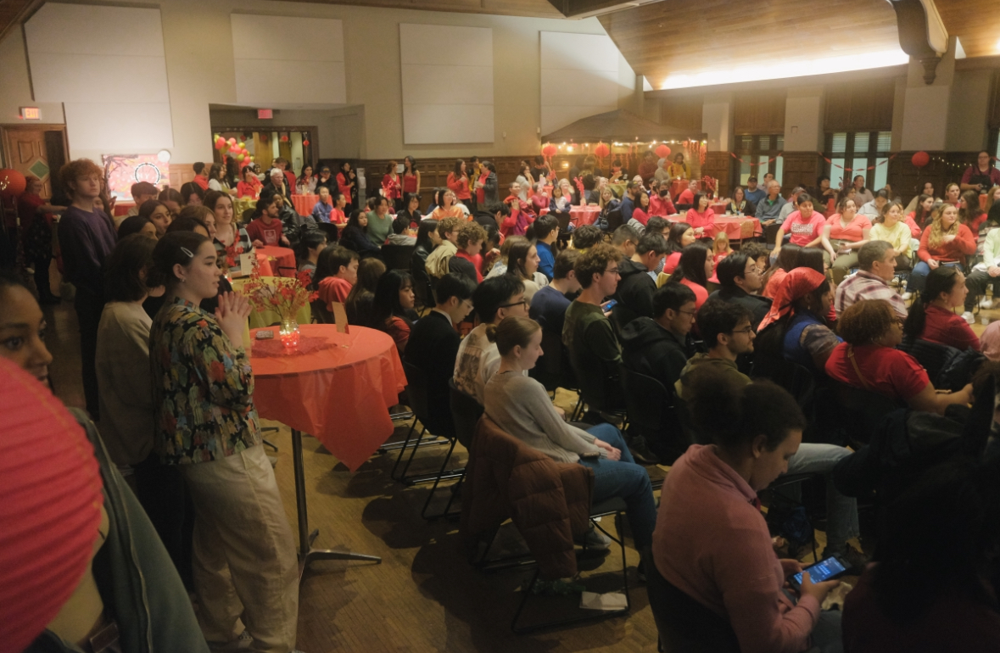

A.S.I.A.

As a member of the executive board for All Students Interested in Asia (A.S.I.A.), the largest multicultural organization at Rhodes College,
I've had the privilege of not only representing my cultural heritage but also fostering an environment where others can share theirs. A.S.I.A.
is dedicated to bringing cultural awareness to our community and providing a platform where identity can be celebrated and understood.
We host three major events annually, alongside several smaller ones, inviting the entire campus to engage in our shared experience.
Through our events, we've drawn over 300 attendees, showcased various community performances, and offered a taste of our cultural cuisine.
Beyond these numbers, though, lies the heart of our work: creating a safe, welcoming space where everyone feels valued and heard.
Being a part of A.S.I.A. has allowed me to grow as a leader, working collaboratively to ensure that our community is more inclusive and culturally aware.
In turn, I've seen the organization flourish, becoming a cornerstone of cultural expression and understanding at Rhodes College.